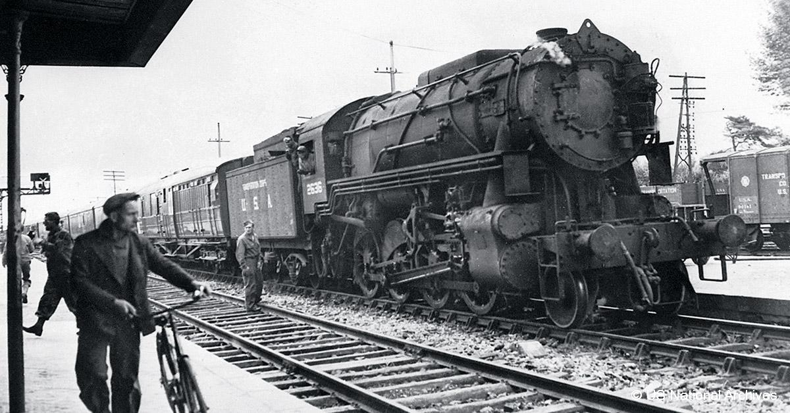

Je suis passionné de train depuis tout petit ! Pendant que certains s'attardent sur des voitures sur roue, j'observe les trains passer les uns après les autres dans les gares que je fréquente !
Ayant très souvent quelques heures d'attente à Colmar, je passe tous les jours à la gare de Colmar afin d'observer le festival de TER 200 passer toutes les 30 minutes... En espérant parfois croiser un TGV !
Le plus impressionnant reste à se positionner sur une des petites gares séparant Mulhouse de Colmar, et d'admirer ses trains passer à 200km/h... Ca fait un choc ! (littéralement)
Le premier train à vapeur jamais construit apparait le 21 février 1804, inventé par Richard Trevithick au pays de Galles. Mais, des traces plus vieilles ont été trouvé et la première utiliation attestée de chariots sur rails (non motorisés) remonte à 1550, dans les mines de Leberthal en Alsace.
La création du train à vapeur se répandit vite favorisant ainsi l'industrialisation des pays comme la France. À partir des années 1900, l'apparition de moteurs électriques puissants et suffisamment compacts à permis l'apparition de la traction électrique, toujours utilisé aujourd'hui. Ce mode de traction nécessite cependant que la ligne sur laquelle le train circule soit équipé d'une caténaire ou d'une voie électrifiée. L'après-guerre verra l'apparition de locomotives diesel !
Bien que cela semble assez éloigné, les réseaux et les télécommunications ont une importance majeur dans le bon fonctionnement des trains ! Par exemple, la SNCF possède des installations Télécoms à surveiller, entreprendre et réparer en cas de besoin !
Afin de pouvoir intervenir au plus vite sur des problèmes ferroviaires, la SNCF a des téléphones filaires le long de ses lignes et sur ses passages à niveau et il est dans le devoir d'un technicien de vérifier qu'ils fonctionnent correctement.